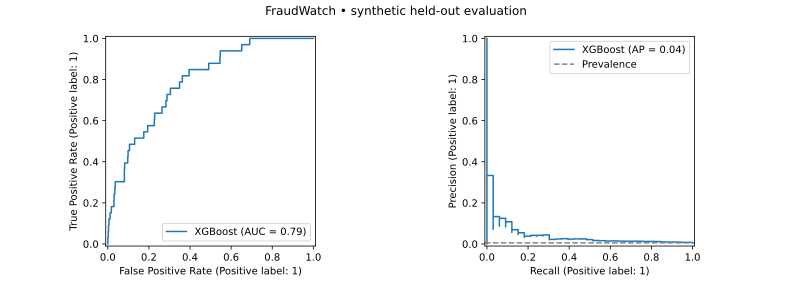

FraudWatch.
From transaction events to risk scores—and the evidence needed to know when a model stops helping.
A SaaS-style reference application connecting model training, streaming infrastructure, asynchronous inference and tenant-scoped monitoring. Built with reproducible synthetic data.
Score a transaction. Inspect the decision.
The exported XGBoost model runs on your device. Use fictional inputs, compare sample traffic and reveal labels to see what the model gets wrong.
Browser demo: local model inference only. Kafka, Flink, FastAPI, PostgreSQL and Streamlit run in the separate Docker application. No payment is processed and no data is sent to a scoring server.
Latest prediction
This is a model score from synthetic training data. It is not a calibrated estimate of real-world fraud probability.
Changing the threshold changes review decisions, not model scores. The default was selected on validation data.
If you know the outcome of your latest custom transaction, add a label:
Explore a labeled sample
Load 500 fixed synthetic examples. Labels stay hidden from the displayed metrics until you reveal them. The shifted sample changes both input distributions and the synthetic label process.
No sample loaded.
Add or reveal labels to evaluate mistakes. Model performance cannot be measured from scores alone.
| Transaction | Amount | Score | Decision | Observed label |
|---|---|---|---|---|
| No transactions yet. | ||||
Latest 30 rows shown; counters include the current session. Refreshing the page clears the session. Swipe the table on a phone to see all columns.
Model provenance and limits
Loading model metadata…
This browser implementation supports this numeric binary-classification model. Its predictions are tested against Python XGBoost. The held-out performance below is unchanged; low recall remains a limitation.
Evaluate before promoting
Separate training, validation and test sets. Compare XGBoost with simpler baselines and select a threshold using explicit error costs.
Design for replay
Kafka and Flink feed an async scoring worker. Tenant-scoped transaction IDs prevent duplicate predictions after retries.
Separate drift from decay
Track input changes, label coverage and observed performance. A distribution shift alone does not prove the model is worse.
Can the score be traced, replayed and evaluated?
Fraud detection is more than a classifier. This project stores the model version and threshold behind each decision, keeps labels out of scoring inputs, and tests authentication, tenant isolation and idempotency.
A useful result, including its limitations.
30,000 synthetic examples. A held-out test set of 6,000 includes 33 fraud examples. Thresholds are selected on validation data, never on the test set.
| Test metric | XGBoost | Logistic regression |
|---|---|---|
| ROC AUC | 0.7927 | 0.7403 |
| Average precision | 0.0411 | 0.0614 |
| Recall at chosen threshold | 3.03% | 12.12% |
| Illustrative error cost | 3,225 | 3,075 |
The simpler model wins on average precision and cost. XGBoost is served to demonstrate the requested engineering stack, not because these results justify production deployment. Low recall and limited positive examples remain explicit limitations.
Download raw evaluation data (JSON) ↓

Code you can follow end to end.
- Run locally: Docker Compose provisions the services; a simulator sends normal and deliberately shifted traffic.
- Inspect experiments: MLflow records parameters, metrics and a packaged Pyfunc model.
- Test behavior: unit/API tests cover invalid inputs, tenant isolation, feature parity and duplicate requests. A separate smoke test exercises the streaming path.
- Understand trade-offs: documentation covers at-least-once delivery, delayed labels, security boundaries and production gaps.
The browser demo above works on this site. The complete streaming application runs locally through Docker; it is not hosted on GitHub Pages. See the repository and its CI runs for the current verification status.